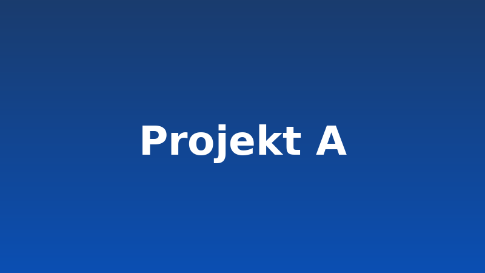
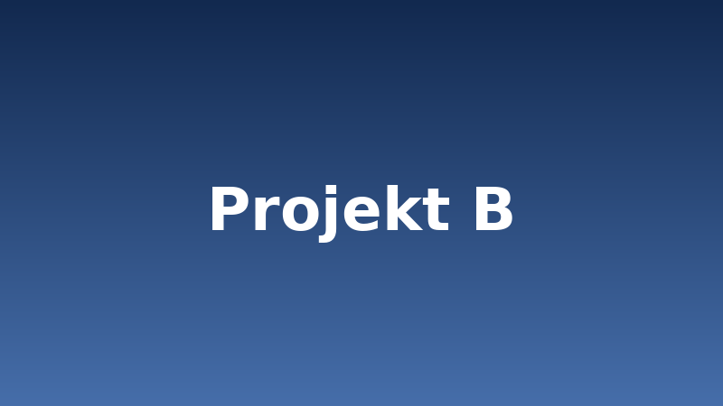

Beispielprojekt A
Kurzbeschreibung: Was wurde gebaut und warum?
Beispielprojekte als Platzhalter.

Kurzbeschreibung: Was wurde gebaut und warum?

Kurzbeschreibung: Was wurde gebaut und warum? Dieser Text ist absichtlich länger, damit sichtbar wird, dass die Schaltflächen beider Karten auf einer Linie unten stehen.
Kurzbeschreibung: Ein Übungsprojekt zur Netzwerktechnik.